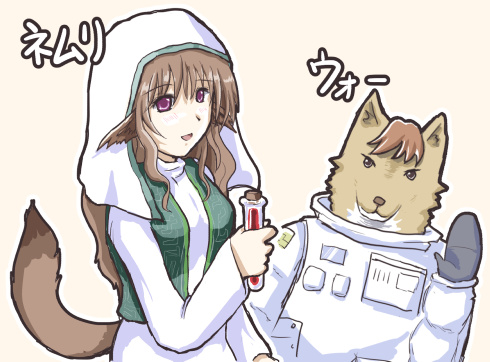

シルバーセカンド開発日誌
■
2019-01-01 (火) 2019年あけまして！▼【2019年 あけまして！】
おかげさまで無事、2019年をむかえることができました！
あけましておめでとうございます！
開発日誌のマスコット、ラッシー

イノシシぽいキャラって干支がテーマの作品や獣人多めでもない限り
そうそういない気がするのでこの年はネタに困りますねえ！
ということでいつも通り今年の抱負！ 2019年の目標は以下の通りです！
●片道勇者2、アルファ2を出す
→ アルファ1のときよりはひっそり出すつもりですが、
いただいたご意見のいくらかを参考に、基本システムを
いくらかマシにしたアルファ2を公開して見ていただこうと考えています。
もうすぐ基本システムだけで開発開始から2周年になってしまい、
このままだと飢えてしまいそうなので、そこから先は
優先度の高いご意見を取り入れて中身を突っ込んでいき、
ひとまずの完成を目指していく感じになると思います。
●サブコンテンツも出したい
→ 開発維持費の確保のためにも、
ゲームよりは作る時間が短いサブコンテンツを
できればいくつか出して足しにしたいところです。
●片道勇者2、できれば早期アクセス版を目指す
→ できれば早期アクセス版までいければいいんですが、
脇のお仕事ちょびっとや、生活維持のための副業もしつつになると思うので
少しゆっくりめになりそうです。2019年中に出せればいいですね……。
あとは私事ですが、家族の介護、というか支援や、
その関連作業に割かれる時間が去年から加速度的に増えつつあるので、
開発時間にもいくらか影響が出るかもしれません。これはみんな通る道です。
●健康維持！
→ 2018年は年間の1/4くらいずっと体調が万全でなくてゴホゴホしてたりしたので、
今年はもう少し、なんとか体調維持のための工夫にもリソースを割きたいと思います。
2019年は開発に使える時間が減少するかもしれないので、
その範囲で少しでも最大限の効率を出したいですね。
ということで色々ありますが、今年も一年、よろしくお願いします！
当サイトの有料作品セールも1/15過ぎまでやる予定ですので、よければぜひ！ ■
2018-12-24 (月) シルバーセカンド20周年！▼【シルバーセカンド20周年！】
クリックで拡大表示

20周年記念の主役はやっぱりアルバート！ 『シルフェイド見聞録』からの長い付き合いです。
ということでこのサイト、「シルバーセカンド」は
2018年12月24日をもってついに 20周年 をむかえました！
ここまでの道のりは、皆さまのお声や手に支えられて
奇跡的にたどることができた結果です。
本当にありがとうございます！
20年ともなると最初の頃をはっきり思い出すのも難しくなってしまうのですが、
何も持たなかった始まりのときを思えば、本当に多くの力や経験、作り上げてきたもの、
そしてたくさんの皆さまとの繋がりを得ることができたと思います。
ゲームを遊んでくださった皆さま、そして
関わってくださった全ての皆さまには、本当に感謝の限りです！
【20年のゲーム開発を振り返って】
思えば20年前の一番最初の私は、
まともにゲームを完成させることすらできないまま
投稿しようと思っていたコンテストがなくなってしまい、
絶望に暮れているような人間でした。
今でもそれが、私にとっての「人生最大の失敗体験」です。
けれどその後、ヤケクソで1日で作った
5分のゲーム（レジェンドオブレストールの1話のみ）を
友人に遊んでもらって笑ってもらえたのが、
今度は「人生最大の成功体験」になりました。
「大きくて偉大なものを作らなくたって楽しんでもらうことはできるんだ！」
という、簡単でありながらも理解することが難しかったそのことを
そのとき知ることができなければ、今の私はここにいなかったでしょう。
そのときから本当に始まった私のゲーム開発の日々において、
ずっといただいてきた皆さまのお声やご意見は、
すべてが私の血肉となっています。
「面白かった」「これが好き」と言ってくださるお声は本当に励みになりました。
それまで十数年間、何のために生きているのか分からない自分でしたが、
おかげさまで人生で初めて「自分はこの世界にいていいのだ」と
思うことができるようになりました。
大げさに思われるかもしれませんが、本当です。
そして逆に、私が「厳しいご意見だなー！」と感じる、
真っ当なご意見やご感想もたくさんいただきました。
慣れない内は「すでにこんなにしんどい思いして作ってるのに、
ゲームってそれ以上に要望されるの！？ 死ぬー！」
なんて思うことも多かったのですが、少しずつ成長してくるうちに、
「それも真っ当なご意見だ」と思える範囲がだんだんと増えてきました。
そしてまた、配慮の大切さやゲーム開発の奥深さに気付くきっかけにもなりました。
もちろんまだまだ未熟ゆえに、今でも「えーみんな厳しい！」と思うことはありますが、
そのお声で鍛え抜かれていくのもまたゲーム開発者だと私は考えています。
ときどき限界を超えて泣き言を言うこともあるかもしれませんが、
それでもおかげさまで、いただいた声で多くのことに気付かされ、
本当にじわじわとですが、力を付けられているという実感があります。
これからも見る目を鍛え、配慮を鍛え、
楽しみを作る力を伸ばしていきたいと願っています。
とはいえ、今の私はこれだけ続けていても
いまだに自分の「未熟さ」が辛く感じています。
一体どれだけやればそれなりのゲーム開発者だと感じられるようになるんでしょうね！
新しい頂（いただき）に登るほどさらに高い山が見え、よりすごい人たちに出会い、
皆さまからのご指摘は止むことなく、目指せる先は無限に伸びていくばかりです。
もしかしたら才能の限界が来ていて、死ぬまでこれが続くのかもしれませんが、
それでも私は可能な限り、ずっと新しい挑戦を続けていきたいと思います。
そしてまた、これまでそういう挑戦ができたのも、
まさに見てくださる皆さまがいらっしゃったからこそです！
「皆さまのおかげです」なんてあまりに月並みな表現ですけれども、私は
「誰にも見てもらっていなければ、絶対にここまで続けてこられなかった」
と断言できます。
「皆さまのおかげです」はお世辞でもなんでもなく、まちがいのない「事実」なのです。
今は5年先がどうなるかも分からない世の中ですが、
叶うのならばこれからも、30年目、40年目と創作を続けていきたいと思っています。
【これからについて】
20年を迎えたとはいえ、それで大きく何かが変わるわけではありません。
来年の2019年もいつも通り、私は皆さまの人生と共に
マイペースに歩んでいくことでしょう。
ただ最近は体のガタガタっぷりがまずいので、
2019年は健康維持を第一にがんばっていきたいですね！
2018年は年間の1/4以上ずっとゴホゴホしてて
病弱キャラみたいになってたので。いや実際病弱なんですけども！
皆さまもお体にはどうかお気を付けください。
＜最後に＞
今年も本当にたくさんの人にお世話になりました！
今の自分は、サイトに来て下さる皆さまや、コメントを寄せてくださる皆さま、
そして見えない大勢の人に支えられて成り立っています。
私のゲームや記事を見てくださっている皆さまには、誠に感謝の限りです！
今これを読んでくださっている皆さまも、
もしよければ来年も、ときどきでいいので見にきてくださると幸いです。
今年も一年、本当にありがとうございました！
次回の開発日誌は2019年の元旦に更新予定です！
それでは皆さま、よいお年を！ ■
2018-12-15 (土) 20年を振り返る4 片道勇者～ﾌﾟﾗﾈｯﾄﾊｳﾙ▼【20年を振り返る その4 片道勇者～ﾌﾟﾗﾈｯﾄﾊｳﾙ】
いよいよ20周年が来週に迫りました！
『12/24』にこのサイトが20周年をむかえるのを前に、
過去作品のキャラを落書きと共に振り返ります！ 今回は第4弾！
『片道勇者』よりネムリ、『プラネットハウル』よりウォー。20周年イラストの一部です。

第4弾は『片道勇者』よりネムリ、『プラネットハウル』よりウォー！
【不幸な薬師 ネムリ】
ネムリは強制横スクロールRPG『片道勇者』に登場する仲間キャラクターです。
『片道勇者』のキャラクターは、ランダム度が大きい世界で
お話が展開される都合上、使えるギミックや使用可能な演出の問題で
キャラクターごとの物語の描き方に悩んでいました。
その中でも、ネムリのストーリーはランダム世界でも使えるギミックを
ある程度はうまく活用できた感じで、
全体を見てもうまく演出できた方かなと思っています。
（たとえばフリーダ王女などは、その人物の背景がシステム的には
何も絡んでこなくて寂しいのですが、ネムリはそうではありません）
で、「私は人間と非人間を行き来する話が好き」と
以前スケイルの話のときに申し上げましたが、
ネムリも方向性は違えど、同じような展開を備えた物語を持っています。
ネムリは登場時点で悲しい運命を背負っており、
基本的にはどうがんばっても人間のままでいられないキャラです。
（※『片道勇者プラス』で新たに、救われる隠しルートができました）
もしネムリのお話で途中で「えー！？」となってしまったときは、
過去にネムリからもらったアイテムのことを思い出しましょう！
もしもらってなかったら、好感度を上げるのが間に合わなかったのだと思いますので、
次はナユタの実をいくつか持っておくのもいいかもしれません。
＜ランダムな世界観ならではのバリエーション＞
なお、『片道勇者』ではネムリや他の仲間キャラにもランダムで接頭辞が付くので、
『強そうなネムリ』や『エッチなネムリ』などが登場してバリエーションごとに
変わったセリフをしゃべってくれる要素がありました。
このやり方は、あくまでランダムバリエーションの一つとして
キャラ崩壊などを気にせず変なセリフを入れられるのが面白かったです。
ぜひ次回も入れたいですね！
＜他作品でも出てる？＞
他作品でも出ているか……という話とはちょっとずれているかもしれませんが、
ネムリは私の要望で、スパイク・チュンソフト様による家庭用ゲーム機リメイク作
『不思議のクロニクル 振リ返リマセン勝ツマデハ』（略してフリカツ）
にも登場させてもらっています。
とてもイメージに合ったボイスも付いているので、気になる方は
Steamなどで出ているのを手に取ってくださるのもいいかもしれません。
フリカツ版のネムリには特に接頭辞がなくとも少しエッチな展開があります！！
さらにそれとは別に、『片道勇者TRPG』というTRPG展開もおこなわれまして、
そこではイラストレーターのモタ様の手で姿がアレンジされつつ、
発言や性格はほぼそのままのネムリが登場します。
TRPG版のネムリは幼い感じにかわいくアレンジされています。
ネムリはどちらのケースもよそに出張するとスレンダーになってて、
たぶん原作が一番セクシー体型だと思います。
平たくできるキャラが他にいないので、出番や性格的に
平たい担当をすることになりやすいためかなと思います。
【「滅びよ」 ウォー/未執行青少年13号】
未執行青少年13号、もといウォーは『プラネットハウル』の主人公です。
獣人しかいない、全てが厳密に管理された衛星アトラスに住んでいますが、
彼は予定外に産まれてしまった存在であるせいで、
人々に貢献できることを示さないと処分されてしまう、
「未執行青少年」という立場です。
なので13号君は生き残るために貢献ポイントを稼ぐべく、
非常に操作性の悪い機体に乗って
死亡率の高いミッションに出かけることになります。
これらの設定はストーリー・セリフ担当のPERYKARN様が
出してくださったのですが、面白い設定で好きです。
そしてウォーという名前は、スノウという「人間」の少女に名付けられた名前です。
そう、スノウが登場するまでは全員「獣人」しか出てこないんですね！
そんな変わった世界が気になる方はぜひ『プラネットハウル』に触れてみてください。
なおウォーの選択肢によく出てくる口ぐせは「滅びよ……」です。
最後は本当にその言葉通りのことを実行できたりしますのでお楽しみに。
ただしゲームプレイ部分はすごい操作性の悪い機体を操るのがテーマなので
全体的に「自転車に初めて乗るとき」のような体験を覚悟してください。
ポイントを稼いでプレイを楽にできる要素もありますので、
そのあたりはぜひ遠慮なく使ってください。
変な操作に慣れていくのが好きな人にはとても向いている一作です。
次回の更新は20周年記念回として【12/24】予定です！ ■
2018-12-08 (土) 20年を振り返る3 ﾓﾉﾘｽﾌｨｱ～シル学▼【20年を振り返る その3 ﾓﾉﾘｽﾌｨｱ～シル学】
『12/24』にこのサイトが20周年となるのを前に、
過去作品のキャラを落書きと共に振り返ります！ 今回は第3弾！
『モノリスフィア』よりモノリス、『シルフドラグーンゼロ』よりパイロット。
『シルフェイド学院物語』よりサラ。20周年イラストの一部です。

第3弾は『モノリスフィア』のモノリスと『シルフドラグーンゼロ』のパイロット、
そして『シルフェイド学院物語』よりサラ！ やや地味なカラーです。
【月の女神 モノリス】
マウスアクションゲーム『モノリスフィア』の世界には
太陽の世界や水の世界など全5つの世界があるのですが、
モノリスはその中の「月の世界」の女神です。
セクシー体型で少し間の抜けたところがあり、
女神という立ち位置でありながら庶民的なところもあります。
『モノリスフィア』は私の作品の中でも珍しく女性キャラを前面に押し出したゲームで、
男性キャラはケモノ（獣人）キャラしかいません。
一本くらいはお色気感が強いものも作ってみようと努力した結果なのですが、
それが後に継承される気配は今のところそんなにありませんね！
それゆえ、『モノリスフィア』は他作品に比べると
少し変わった雰囲気の一本になっているかもしれません。
本作はコンテストに投稿する都合上、
全体的にほんわかとした雰囲気を狙ったストーリーにしていました。
（※「誰も死なない」という程度の意味くらいしかないかもしれませんけれど！）
いま見直しても、オープニングなど会話が変に長くて
「ゲーム開始（再開）まだかなー」と思うのが個人的に気になるくらいで
全体的な流れとしては今でも好きなお話なので、
こういうテイストのアクションゲームもまた作ってみたいですね！
ちなみに開発日誌のマスコット、ラッシーが
そんな感じの2Dマウスアクションの続編で主人公を担当する予定でしたが、
今のところ予定だけで終わってしまっています。
ラッシー↓

【シルフドラグーンゼロより パイロット】
この人物はSF的な世界にて、
外星系から来たMIDASナノマシンに奪われた地球を取り戻そうとする一派、
『マザーアース』に属する航宙戦闘機ドラグーンのパイロットです。
MIDASに汚染されると機体ごとMIDAS化されてしまい、
敵の一部になってしまうというまずい特性を持っていることもあって、
主人公は最後にあんなことになってしまいます。
パイロットは割と割り切った性格……といいますか、
「出撃回数6回以内のパイロット死亡率が100.0％」
の仕事に志願するくらいなので、
そこまで自分の死には頓着していませんが、
いざ死の宣告を突きつけられると3時間くらい考えてしまう程度には
人間味を残している人です。
最初は艦長から「彼」と呼ばれていましたが、実は彼じゃないことが判明したのか、
途中から「パイロット君」と呼ばれるようになります。
＜続編の案＞
この世界観の続編ゲームの案もありました。
パイロットによって救われた、MIDASがほぼいなくなった
地球やその周りでのパイロットの子孫による物語を考えていたのです。
死亡確定のミッションに出られたのは、その子の将来を考えて、
「自分の腕があればいちかばちかで地球奪還できるでしょ」
と思えたからこその行動だったわけですね。
ゲームシステム的な案としては『プラネットハウル』に近いもので、
先にプラネットハウルでゲーム部分の案が消費されたので
このプランはネタ帳の中で静かに眠っています。
もしかしたら、ボツゲー特集みたいなのをするときに
どこかでシステムをお見せできる機会もあるかもしれません。
【シルフェイド学院物語より サラ】
サラは『シルフェイド学院物語』で主人公にシルフェイド島を
救ってくれるよう依頼してくる人物です。
サラは「別次元のサラと意識を共有している」という設定で、
その力により多くのパターンの未来を見ています。
外乱がないNPCたちだけの世界だとどのパターンでも滅んでしまうので、
何をするか分からないカオスな存在である主人公を呼びました、
というのがシル学の物語の始まりです。
サラは色んな次元に存在することが前提のキャラクターなので、
「異なるルートを知ることができる」というプレイヤー視点と合わせるにあたって
「主人公」としても使えそうですし、別の運命をたどった異なるバージョンの
サラがいるので「ボス」にも使えるかもしれない設定ですね。
すでに『片道勇者』内でも異なるバージョンの一つらしきキャラが登場してますが、
またさらに別の作品でも登場するかもしれません。
キャラクターの性格としては、私のスタンダードな丁寧系キャラで、
不思議な力を持っていること以外は自分のスリーサイズを
パスワードにしているくらいしか変なところがない人物だと思います。
基本的に、キャラクターはしゃべる量が増えれば増えるほど
ボロ（？）が出てきますから、
出番が少ないサラは変な味付けをされずに済んだとも言えます。
この「しゃべる量が増えると変な味付けも増える」はTRPGなどでも同じですね！
元の方向性がどうであれ、プレイヤーキャラとしてたくさんしゃべるほど
変な味付けが増えていくのはほとんどの場合で避けられないので、
「クール系」とか「ヒロイン系」のキャラを全編を通して演じるのはとても大変です。
アルバートももともとクール系だったはずなのに……。
特にTRPGだと、完璧に演じていてもサイコロの出目がときどき悪いせいで
「クール系なドジっ子」扱いされてしまったりもするので
そういった点まで含めるとイメージ通りに見せるのはとても難しいですね。
そういうのを見ると、物語に出てくる「かっこいい系キャラ」や「クール系キャラ」は、
かっこよくなったりクールに見せられるように
サイコロの出目が作者様によって調整されているんだな、
というのがよく分かります。 ■
2018-11-24 (土) 20年を振り返る その1 シル見▼
ということで来月の『12/24』、とうとうこのサイトが20周年となります！
そんなわけでこれから毎週、このサイトの歴史とも言うべき
過去作品のキャラを落書きと共に振り返ってみることにしました。
『シルフェイド見聞録』より主人公エシュターとヒロイン（？）のシーナ。20周年イラストの一部です。
完結していないという意味で半分黒歴史なのですが、
最初は『シルフェイド見聞録』よりエシュターとシーナ！
この2人は少し設定がアレンジされて『シルフェイド学院物語』にも登場しています。
【医者を目指す不運な少年 エシュター】
＜特徴： 理想通りに行かない＞
エシュターは医者を目指してノーマ学院へ入学するものの
なかなか理想通りの結果にならずに色々なことに巻き込まれる主人公です。
処女作『レジェンドオブレストール』の次に初めてまともなお話を
作るにあたって主人公エシュターの個性付けには迷ったのですが、
「なかなか理想通りに行かない」というキャラ付けは今思うと、
「ベストな結果になるのがちょっとご都合主義的で好きじゃない」という、
若かった私の変な反抗心の表れだったかもしれません。
当時の私は「主人公の機転によってほぼ理想通りの結果をバリバリ出せる展開」が
ご都合的に感じ、少し食傷気味だったところがありました。
なので自分がお話を作るとしたら、
「機転や運で何とかできても、結果は完全に満足できないものにしてみてはどうか」
というのがどうやら当時の好みだったみたいです。
今でも、私が作った物語のエンディングなどを見るとそんな雰囲気が出てますね。
つまり、「理想通りにいかない」の結果として、
エシュターは入りたい学部には入ることができずに
仕方なく目標に近い次点の学部に入り、
教頭に嫌われて退学の危機だったという問題を解決したと思ったら
別の意味で教頭につきまとわれる副作用が付いてきたりと、
微妙に「当初の想定通りにならない展開」にするのが好きだったのです。
開発視点での結果論としては、そちらの方が話の種が連鎖して増えていくので、
初めて普通の話を作ったにしてはいい設定だったのではないかなと思っています。
＜情報力の強さを主張したかった＞
また、エシュターは物語の途中で、守護霊のような存在、
「思慮深きフクロウ」のトーテムを得ます。
このトーテム、戦闘中の情報収集力が高まったり
時間経過に応じて回避周りにボーナスが付くといった力があるのですが、
いざトーテムを得て戦闘をやってみると命中率や推定ダメージが
正確に分かるのがなかなか便利なように設定されていて、
「パワー系主人公もかっこいいけど『情報力』も強いんだぞ！」
ということをゲーム的に主張したかったのを思い出します。
今でも、ゲームに出てくる「情報力」系主人公は意外と少ないかもしれません。
アマチュアゲームだからこそできる隙間キャラという感じがあります。
＜他のゲームに出張したときは？＞
エシュターは『シルフェイド学院物語』にも登場していますが、
主人公という立ち位置でないので前述のキャラ特徴が使いにくく、
キャラ付けの味付けが足りなかった気がしたので
やや無理めな改変設定（エシュターの絆イベントで分かります）が追加されています。
私ですら久しぶりに見て「えーそんなのアリかよ！」と思ってしまったので
シル学のエシュターはあらかじめ別人と思っておいてくださった方がよさそうです。
ちなみにシル見の方でも途中でそうなる案がありました。
【不治の病の少女 シーナ】
＜ゲロイン誕生の経緯＞
シーナは本好きで記憶力がすごい一方で不治の病にかかっており、
頻繁に口を押さえては「うっ！」と言っている少女です。
いつの頃かゲロインと呼ばれていましたね。
感染する可能性もある「不治の病」も全然気にせずに相手をしてくれている
（とシーナから見えている）エシュターに淡い思いを抱いています。
エシュターが困ったときには人知れず強引なこともしており、
意外と目的のためには手段を選ばないタイプです。
このキャラクターが生み出された経緯ですが、
まず前提として、当時の私はヒロインに自分の好きな属性を詰め込むのが
あまりにも恥ずかしすぎてとてもできませんでした。
だって作品という形とはいえ、自分の好きな女性像や男性像を実質的に
世界に向けて公開するとか怖くてできないですよ！ と思っていたのです。
なのでシーナは無意識に、私の中の「おとなしい性格」の成分をベースにしつつも、
自分にとって理解しやすかった「好きじゃない属性」として「体の弱さ」成分が含有されました。
そして私の知る「体の弱さ」の特徴として最もなじみ深かったのが「嘔吐」でした。
私は小学生のときから、びっくりするほど胃が弱いのかその他の理由により、
クラスメイトからゲロ系生徒としてよく知られていたのです。
当時の先生方やクラスメイト各位には
多大なご迷惑をおかけしたことを深くお詫び申し上げます。
過程はともあれ、私は特にオエーッ要素を
メインのキャラ付けにしようと意識してなかったのですが、
他の特徴が地味だったのでシーナはゲロインとして印象づけられることになりました。
最近ではゲロインもすっかり珍しくなくなったので、
今はそこまで特別なキャラではなくなったと思います。
いま思うと、何も考えずに欲望のまま初めての物語を作ろうとしたら
あまり面白くない「完全無欠な理想型ヒロイン」を作ってしまって
目立たない結果に終わりかねない気もするので、
たとえ私の「恥じらい」が原因だったとしても、こういう経緯で
弱点もあるシーナというヒロインが生まれたのはとてもよかったなと思っています。
特に、「自分の知る特徴」をキャラクターに込めるやり方はとても描きやすい！
「理想のキャラクター」ではなく、「自分の描けるキャラクター」を
作ることの重要性をここで学んだ気がします。
もちろん自分に描けるなら「理想のキャラクター」でも全く問題ないんですけれど、
私の場合、理想通りにするとそこから崩しにくくなって
キャラとしての動きがなくなってしまいそうですからね。
＜別作品で出たときは？＞
なお、『シルフェイド学院物語』でもシーナは不治の病により、病院で暮らしています。
2周目から住居として「病院」を選択可能になりますので、そこで出会えることでしょう。
「地歴探究部」でプレイしたときだけ、とても都合の良い流れになる
シーナの特殊なエンディング分岐が用意されていますが、
これも『見聞録』で使うかもしれなかった結末の一つです。
考えていたのは学院物語よりもっとスケールの小さいものでしたけどね！
また、『シルエットノート』でも村上シイナとして主人公の姉役として登場しています。
こちらは特に病気設定もなくおとなしいわけでもなく、
健康な普通のお姉さんとして活躍しています。■
2018-11-17 (土) 今週はおやすみです▼【今週はおやすみです】
今週の開発日誌はおやすみです！
今週はじんわり風邪で微妙に不調だったので、
Steam版片道勇者のバグ対応やら趣味のお手伝いを進めていました。
と思っていたらここ数日の寒さでまた治りかけた咳がよく出るようになってきたので
再び療養と作業の同時進行の日々です。
周りもゴホゴホ言ってる人が多いので皆さんもお気を付けて！

以下は前回いただいた拍手コメントへの返信です。
皆様からのコメント、いつもありがとうございます！
＞セカンドライフ。結構前に金稼ぎツールとして紹介する本で
＞金稼いでる人がいたなー程度の認識でしたが、今でも .
＞やってる人たちはいるようで。ちょっと前にはNHKでも .
＞（自閉症のユーザーにスポットをあてる形ですが） .
＞取り上げられたりしてましたね .
おお、調べたらなんとつい去年頃に取り上げられていたとは！
私はセカンドライフをやってたのは数年前なんですが、
そのときも、有名なエリアならときどき
人と遭遇することができるくらいには人がいました。
おっしゃる話にも関連するかもしれませんが、前回の補足情報として、
なんとなくお散歩して出会った人と話すコミュニケーションツールとして使うには
セカンドライフは今はちょっと人が少なすぎる感じはしています。
オンラインゲームと違って、一時でもパーティーを組むといった要素もないですしね。
ただ、目的を持って趣味や特定のテーマで参加する意欲をお持ちでしたら
そういう人たちのコミュニティに参加することができそうな感じでした。
あらかじめネットでそういうコミュニティを探した上で、
という順になるでしょうけれども、
普段は公には言えない悩みや好きを共有したりできる可能性があるので、
人によっては安らぎの場になるかもしれません。 ■
2018-09-08 (土) 落ち着かない日々▼
ようやく落ち着いたので開発再開！ と前回言ってたら、
台風21号でとても落ち着かないことになったウルフです。
色々被害があったのでリフォーム屋さんに連絡したら、
リフォーム屋さん自身の家さえも壊れてる中で
修理などに走り回っているらしくて大変な状態だそうです。
今年の台風21号は近年では最大級の台風とのことで、
台風の跡には2m以上のでっかいアンテナが落ちてたり
柵が降ってきてたり木が倒れてたりで
外を歩いてたら本当に命がなかったかもしれないと感じられるような状況でした。
今朝（そう、今日！）も大阪含め関西で記録的短時間大雨警報が出てましたし、
台風は過ぎてもまだまだ予断を許さない状況が続いています。
今は、北海道の方が地震で大変なことになっていたり、
全域停電があったという情報がニュースで流れてきていますし、
SNSなどでも現地の方々の苦労されている声が挙がっています。
心より、北海道の皆様のご無事をお祈りするばかりです。■
2018-09-01 (土) 元の日々へ！＆サイトSSL対応▼
ということでウディコンも無事終わり、
複数の別件で少しドタバタしていたのも落ち着いたので
GoogleさんからスルーされないようにサイトのSSL化の部分対応を行ったり、
メインであるゲーム開発を再開したりした一週間となりました。
サイトのSSL対応とは、要するに「https」から始まるアドレスを入れても
正常に見られるようにするための対応なのですが、
これをやらないとGoogleさんの検索でも優先度が下げられるし
Google Chromeで「保護されていないページ」だとURL欄に出てしまうだとかで、
珍しく世間の波に追われての対応となりました。
ここまでサイト改修したのは、全ページを
フレーム前提で作っていたのをやめたとき以来です。
（いまだに一部紹介ページやコミュニティには
フレームが使われてるページがありますが、
トップページなど主要ページはフレームを使わないように変更したのです）
まだ「保護された通信」と出ないページは多くありますが、
画像が読み込まれなかったところだった状態に比べれば
ひとまずhttpsのアドレスでもそれなりに見られるようになったり、
CGIも一通り対応できたと思うので、今後は穴を見つけてはじわじわ修正していきます。
ここからはしばらく落ち着いて『片道勇者2』の開発に戻れそうなので、
まだ残っているインターフェース調整やシステム周りのテコ入れ、
その他諸々気になるところを片付けつつ、
データを増やすフェイズにも片足を突っ込んでいきたいと思っています。
インターフェースも全然完璧じゃないんですが、長くこればっかりいじってると
良くなってるのか分からなくて精神的に悪いようなので、
色々交えて進めていきたいですね。
ということで、今年も残り4ヶ月、引き続きよろしくお願いいたします！■
2018-08-11 (土) 別件だらけの一週間▼【別件だらけの一週間】
今週はウディコンの各種対応を続けながら、
機器不調の修理周りの件でドタバタするところから始まって、
やったことのないお仕事が飛んできて頭を加熱させたりしていた一週間でした。
自分がやったことのないお仕事、というか自分じゃやらない類いの新しい挑戦は
強制イベントとして起こるものくらいしかしないので、
これもいい機会だと思って全力を尽くしたいですね！
そのうち何をやっていたか明らかになると思います。
何も載せるものがないのもアレなので、落書きを一枚載せておきます！

【第10回ウディコン、一般審査受付中！】
第10回ウディコンも、すでに皆様からの
熱い一般審査コメントがたくさん届いております！
締め切りは来週8/18 23：59までですので、審査してみようかなと思われた方や
応援したい作品がある方は、よければぜひ一般審査に挑戦してみてください！
【ウディコン公式ページはこちら】
今年は過去にご参加くださった方の作品にも
確実な進歩や遊びやすさの向上が見られたり、
一方でもうちょっといじるだけで最高の一作になるのではと思うゲームもあったりで
作者の立場としてもよい学び場になっているように感じます。
RPGエディターであるにも関わらず、相変わらず色んなジャンルのゲームが来るので、
「あー自分もこういうの作ってみたい！」と思い出させてくれるのが
私にとってウディコンのすごくいいところです。
皆様の様々な挑戦や熱意あふれる作品、本当にありがとうございます！
Copyright © SmokingWOLF / Silver Second
 カテゴリ: 開発日誌
カテゴリ: 開発日誌 カテゴリ: 開発日誌
カテゴリ: 開発日誌